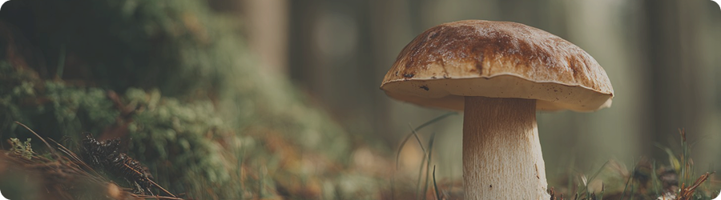

Боровик
Как отличить боровик от двойников
Что такое боровик
Боровик — один из самых известных и ценных лесных грибов. Он плотный, мясистый и хорошо заметен среди листвы и мха благодаря плотной форме и спокойному цвету
Но рядом с ним часто встречаются похожие грибы. Некоторые из них съедобны, а другие могут быть опасны.
Даже базовое понимание отличий помогает избежать ошибок и собирать грибы безопасно.
Почему важно уметь отличать

Безопасность
Ошибки при сборе грибов могут привести к отравлению — важно быть уверенным.
Внимание
Даже похожие грибы отличаются деталями — цветом, формой и текстурой.
Уверенность
Понимание отличий снижает сомнения и делает сбор более спокойным.
Как распознать боровик
Настоящий боровик имеет плотную ножку и гладкую шляпку тёплого коричневого оттенка. Снизу — трубчатая структура, а не пластинки. Мякоть светлая и не темнеет при срезе.
Если гриб выглядит слишком ярким или резко отличается по цвету, стоит проверить его внимательнее.
На что обращать внимание
Эти признаки помогают отличить боровик от двойников и избежать ошибок при сборе.
Почему важно проверять каждый гриб
Даже в одном месте могут расти разные виды грибов. Похожие по форме экземпляры могут отличаться по внутренней структуре и свойствам.
Проверка каждого гриба снижает риск ошибки и делает сбор более безопасным. Лучше потратить немного времени на проверку, чем рисковать.
Как распознать боровик
01
Осмотри шляпку
Она должна быть ровной, без резких оттенков и пятен.
02
Проверь нижнюю часть
У боровика трубчатая структура, а не пластинки.
03
Сделай срез
Мякоть остаётся светлой и не темнеет.
04
Оцени ножку
Она плотная, без резких цветовых переходов и пятен.
Почему важно проверять каждый гриб
Умение отличать грибы — это навык наблюдения. Со временем ты начинаешь быстрее замечать детали и видеть разницу между похожими видами.
Это делает сбор грибов спокойнее, безопаснее и более осознанным.
